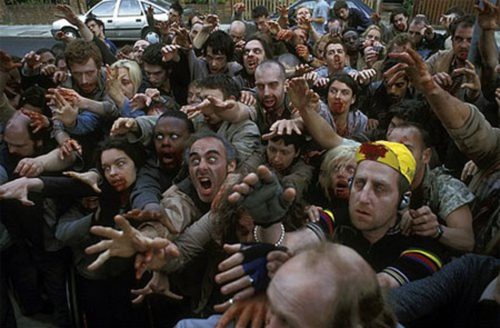
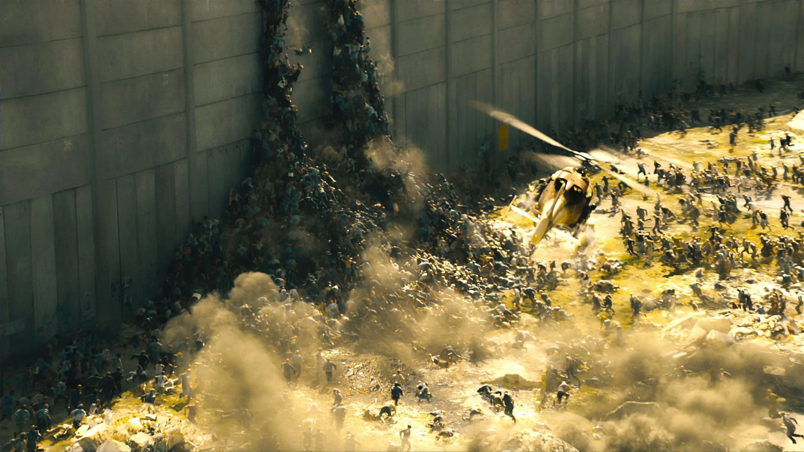

A chaotic outbreak begins in the city, throwing Gerry Lane and his family into a race for survival.
Movie Overview
"World War Z" (2013) is a thrilling apocalyptic action-horror movie directed by Marc Forster and based on the bestselling novel by Max Brooks. The film follows Gerry Lane, a former United Nations investigator, played by Brad Pitt, as he embarks on a globe-spanning mission to uncover the source of a rapidly spreading zombie pandemic that threatens to annihilate humanity.
Set against a backdrop of chaos and desperation, the story takes viewers to locations like South Korea, Jerusalem, and the World Health Organization (WHO) laboratory, each presenting new challenges and breathtaking sequences. The film is celebrated for its intense and fast-paced storytelling, especially its depiction of swarming, fast-moving zombies, a departure from the traditional slow undead.
Packed with edge-of-your-seat action, "World War Z" is a gripping tale of survival, hope, and the lengths one man will go to in order to save his family—and the world. Its powerful themes, innovative visual effects, and Brad Pitt's charismatic performance make it a standout entry in the zombie and disaster film genre.
Key Scenes

The Zombie Outbreak in Philadelphia

The Siege of Jerusalem
A massive zombie horde breaches the walls of Jerusalem, leading to one of the film's most iconic scenes.
The WHO Laboratory
Gerry Lane tests a bold solution in a tense sequence surrounded by zombies.